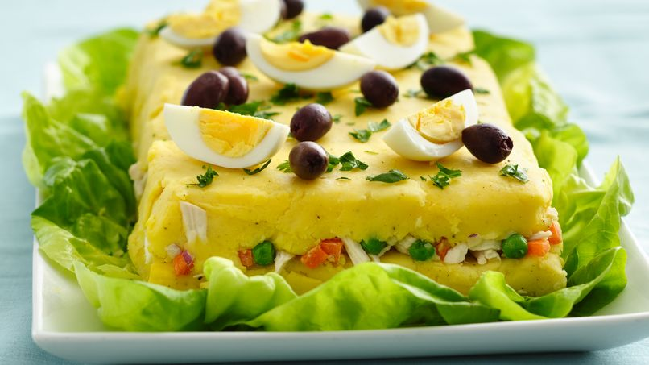

Causa Rellena

This spicy potato-layered dish with meat is a everyone-is-going-to-love-it dish! Even if people don't like
certain ingredients, the combination is sensational! With this dish you can make the layers as thin or as thick
as you like. You can substitute the tuna with chicken or other seafood.
Ingredients
- 8 russet potatoes, peeled
- ½ cup vegetable oil, or as needed
- 2 tablespoons minced aji amarillo
- salt and ground black pepper to taste
- 2 (5 ounce) cans tuna, drained
- 1 small red onion, diced small
- ½ cup mayonnaise, divided
- 2 avocados, cut into thin strips
- 3 hard-boiled eggs, thinly sliced
Steps
-
Place potatoes into a large pot and cover with salted water; bring to a boil. Reduce heat to medium-low
and simmer until tender, about 20 minutes. Drain.
-
Mash potatoes with a ricer or hand mixer until smooth. Gradually stir in oil until potatoes come together;
add aji amarillo, salt, and pepper. Cool potato mixture in the refrigerator, about 20 minutes.
-
Stir tuna, onion, and 1/4 cup mayonnaise together in a bowl.
-
Line a casserole dish with plastic wrap. Spread 1/2 the potato mixture on the bottom of the dish.
Spread 2 tablespoons mayonnaise over the potatoes, spread the tuna mixture over the mayonnaise, and place
the avocado slices in a single layer on top of the tuna mixture. Spread the remaining 1/2 of potato mixture
over the avocados, and top with remaining 2 tablespoons mayonnaise. Place sliced eggs over the top. Cover
casserole dish with plastic wrap and refrigerate until firm, about 30 minutes.
-
Invert casserole dish onto a serving dish or baking sheet to remove potato casserole from dish. Remove
plastic wrap and cut casserole into squares.